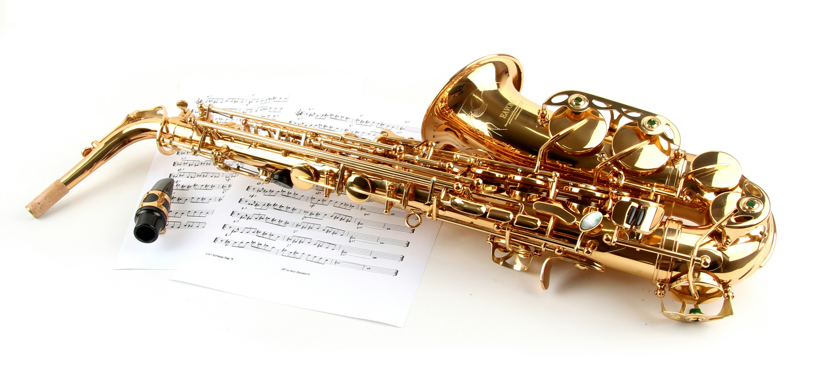

Description:
The saxophone is a woodwind instrument known for its strong, expressive, and sometimes smooth or powerful sound. It is commonly used in concert bands, jazz groups, marching bands, and many styles of popular music. The main parts of a saxophone include the mouthpiece, reed, neck, body, keys, tone holes, bow, and bell. Although it is usually made of brass, it is classified as a woodwind because it uses a reed to produce sound.

How to Play the Saxophone:
The saxophone is played by blowing air through the mouthpiece while a single reed vibrates. The player presses different combinations of keys to open and close tone holes, which changes the notes. Breath support, tongue movement, and mouth position also help control the tone and articulation.